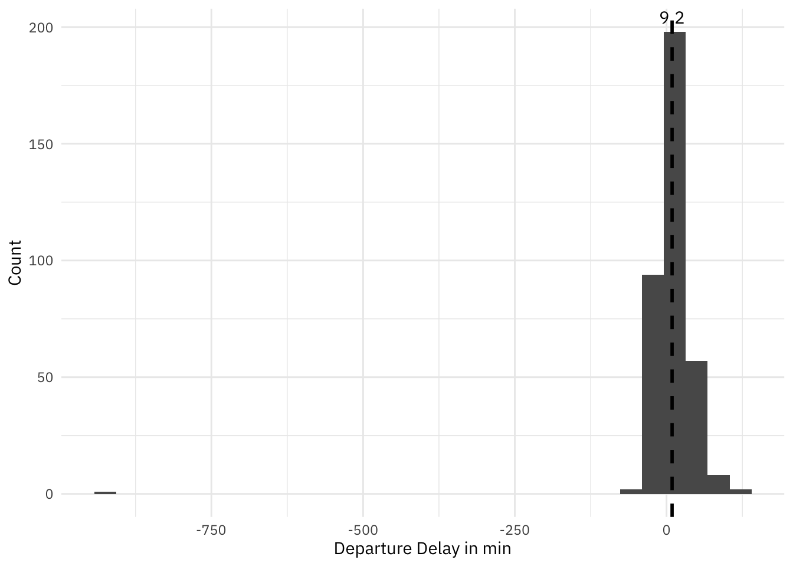
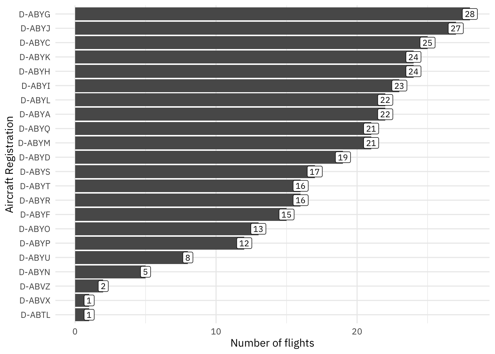

# A tibble: 1 × 4
flights first_date last_date registrations
<int> <date> <date> <int>
1 362 2024-12-14 2025-12-13 22Flight LH402
Soon I will be heading for New York for the Christmas break. I’ll be flying from Hamburg to Newark (EWR) via Frankfurt (FRA) with Lufthansa. On the leg from FRA-EWR Lufthansa is operating with the queen of the skies, the legend Boeing 747.

In this short post, I’ll check some stats of this flight throughout the past year and and toward the end, I’ll also try to predict the registration of the aircraft, I will fly with.
The foundation of this analysis is data from Flightradar24 about flight LH402 throughout the past year on a daily basis.
And here is a very first glimpse on the dataset used.
We have data from 362 LH402 flights, ranging from Dec 14th 2024 to Dec 13th 2025 with 22 different (distinct) registrations (aircraft)
Flighttime
In the last 362 days, the average flight time was 7:54 h. But how was this different by month? Lets check!

It appears that there is a seasonal effect (though we are looking only into one year). Obviously during spring and summer months (in Germany) the flight time is a bit shorter. There might be different reasons why this is, but the most likely one is the different behavior of the Jetstream. Since I’ll be flying still in December I am expecting a slightly longer flight time.
Timliness
Of course, I’m very interested in the timeliness of the flight and will investigate this a bit. Here we will look into the difference of scheduled time of departure vs. actual time of departure.


The mean departure delay is 44.5 minutes. In the majority cases it is luckily below, and there is one case with a delay of ~550 minutes. To account for this, there is another tab, which shows the average delay time, by removing all flights with a delay of more than 200 minutes - it is less: 43.1 minutes.
Most important is to understand, what the impact on arrival timeliness is. Therefore let’s check arrival delays.

m <- data |>
filter(between(arr_delay_min, -200, 200) ) |>
summarise(m = mean(arr_delay_min, na.rm = TRUE)) |>
pull(m)
data |>
filter(between(arr_delay_min, -200, 200) ) |>
ggplot(aes(x = arr_delay_min)) +
geom_histogram() +
geom_vline(xintercept = m, linetype = "dashed", linewidth = 1) +
annotate("text", x = m, y = Inf, label = round(m, 1), vjust = 1.2) +
theme_plex() +
labs(x = "Arrival Delay in min", y = "Count" )`stat_bin()` using `bins = 30`. Pick better value `binwidth`.
That looks even better, considering the delay of departure. On average, the flight arrives only 9.2 minutes after scheduled arrival, with more cases even less. The one case at the very left is caused by the heavily delayed flight (day difference). So what happens if we exclude this from the calculation? The arrival delay goes up to 11.7 minutes, but in many cases even earlier. Which is great!
Aircraft Registration
According to aeronews, Lufhansa operates 19 aircraft of the type Boeing 747-800 and on top 8 747-400 all with a unique registration. In this dataset we had 22 unique registrations - 22 out of potential 27.
Lets investigate, which aircraft is used how often over time.

There are few planes, which have been used less than 10-times in the last 362 days to fly from Frankfurt to Newark; the least is D-ABTL.
But there is also two registrations, which are leading: D-ABYJ and D-ABYC.
We are currently looking at the data for one year. My assumption is, that rotation of aircrafts can change over time and therefore, in order to predict the registration I will fly with, the more recent registrations are benefitial. Thats why I want to see the usage pattern by registration.

Each dot in the plot indicates a usage occasion of the aircraft (one flight from FRA to EWR).
And yes, we can see differences. While D-ABYA was used consistently over the year, for example D-ABYQ had longer breaks, but has lately intensified.
Prediction
To predict the most likely aircraft for 18 Dec even though my dataset ends on 13 Dec, I used a simple Markov transition approach based on the sequence of tail numbers.
First, I estimated how many flights per day are typically recorded in the data (only 1; but just to be sure). From the time gap between 13 Dec and 18 Dec, I derived an approximate number of steps, meaning how many consecutive flights I need to move forward in the sequence.
Next, I built a transition table that captures how often one registration is followed by another, and converted those counts into transition probabilities.
To avoid zero probability cases, I applied a small amount of smoothing.
Finally, I started with the last observed registration on 13 Dec and propagated the probabilities forward by the estimated number of steps. The registration with the highest resulting probability is my best estimate for which aircraft is most likely to operate the flight on 18 Dec.
# A tibble: 1 × 2
registration p
<chr> <dbl>
1 D-ABYI 0.0653We see at the very top, there were 22 distinct registrations, which gives us a propability of 1/22 (4.5%) per registration being next, while totally ignoring, that usage patterns of aircraft obviously change over the course of the year and that there is 27 747’s.
According to my approach, the propability is slightly higher: with 6.5% it will be D-ABYI. Nothing I would bet on, but curious to see, what happens.